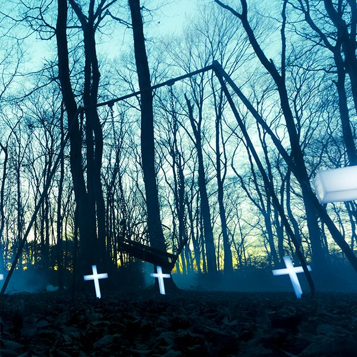

TRACES VOL.2
the GazettE · 2017The members of gazettE offer in this album a very atmospheric and sentimental stop and understanding the feelings of their loved ones as themselves, if you are going through a moment of melancholy you could try listening to "Cassis", "Calm Envy", "Without a Trace" Etc..
Listen on Spotify